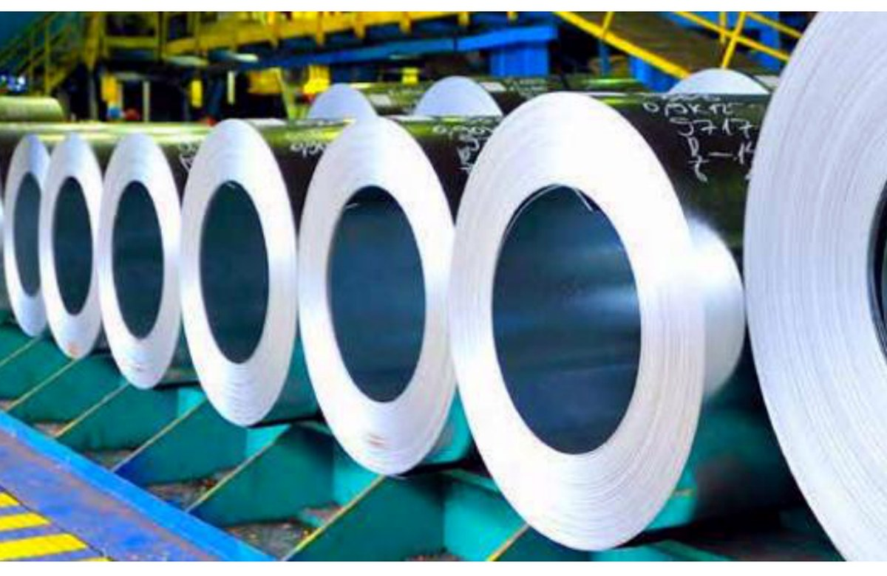

01Product category
เหล็กและวัสดุโครงสร้าง
เหล็กเส้น เหล็กรูปพรรณ เหล็กแผ่น เหล็กท่อ และวัสดุโครงสร้างสำหรับงานก่อสร้าง งานต่อเติม และงานประกอบตามแบบ
- เหล็กเส้น / H-Beam / I-Beam
- Angle / Channel / Steel pipe
- จัดหาตามขนาด จำนวน และสเปก